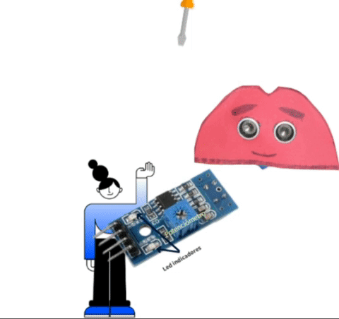
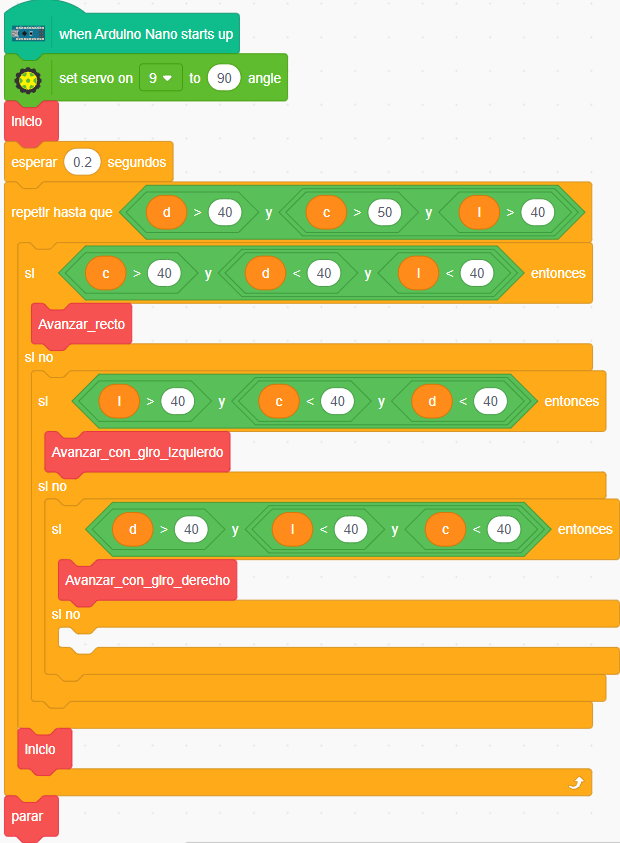
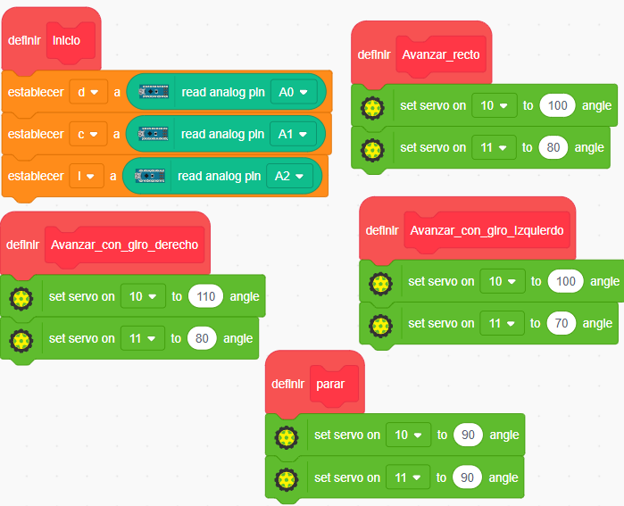
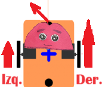
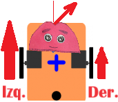

Ajustando los sensores IR
1°
Calibrar los IR con su potenciómetro
Es necesario calibrar la sensibilidad de las 3 placas IR, para detectar correctamente superficies claras y oscuras. Para ello el Tcrt5000 trae un potenciómetro y dos leds que me ayudan en la tarea. Para proceder a la calibración hacer:
|  |
Volver a comprobar ambos procedimientos hasta que se cumpla que:
Este procedimiento debe realizarse en los 3 sensores IR. |
2°
Valores que entregan los IR
Para conocer los valores que los sensores IR entregan -al estar sobre una superficie clara y una negra- PonchoBot te ayuda a través de un programa realizado con Pictoblox. Siguiendo las instrucciones, al final del proceso, los 3 sensores IR quedan listos para que PonchoBot pueda ser programado, y seguir una línea negra sin perderse en el camino. A continuación una animación del funcionamiento de dicho programa:
En definitiva podemos concluir que en los 3 sensores, cualquier valor por encima de 40-50, nos asegura que el sensor está ubicado sobre una línea negra. Nosotros utilizaremos para asegurarnos el valor de 40.
3°
Estructura general de la programación de PonchoBot usando los valores obtenidos
En la programación vamos a anidar bloques condicionales si ... entonces - si no para que PonchoBot tome una sola decisión en cada ciclo repetir hasta que ... . Vamos a crear nuestros bloques para darle mayor claridad a la programación y facilitar su lectura y corrección.
|  |
Vemos que todas las condiciones tienen que ver con el estado de los sensores IR derecho-centro-izquierdo (SD-SC-SI). Siempre se consultan por el estado de los 3 sensores, para poder a futuro, complejizar el circuito con cruces y curvas en ángulos rectos. Si SC es > 40 (está sobre la línea negra) entonces se debe seguir en línea recta. Si SI es > 40 (está sobre la línea negra) entonces se debe avanzar girando levemente hacia la izquierda. Si SD es > 40 (está sobre la línea negra) entonces se debe avanzar girando levemente hacia la derecha. |
4°
Programación de Mis bloques usando % de velocidad
|
Tabla 1: % velocidades del motor izquierdo
|
Tabla 2: % velocidades del motor derecho
|
Truquito: Si quiero disminuir igual % de velocidad en los dos motores, partiendo de 90 (parado): lo mismo que le sumo al izquierdo le resto al derecho. Ejemplos:
- Si quiero que ambos motores funcionen a un 10% de su velocidad, al izquierdo le sumo 10: 90+10=100 y al derecho le resto 10: 90-10=80
- Si quiero mas % de vel. del izquierdo (para girar a la derecha), sumo más: 90+20=110 y al derecho resto menos: 90-10 =80
- Si quiero menos % de vel. del izquierdo (para girar a la izquierda), sumo menos: 90+10=100 y al derecho resto más: 90-20=70
|
1. Avanzar_recto

3. Avanzar_con_giro_Izquierdo
 |
2. Avanzar_con_giro_Derecha
 |